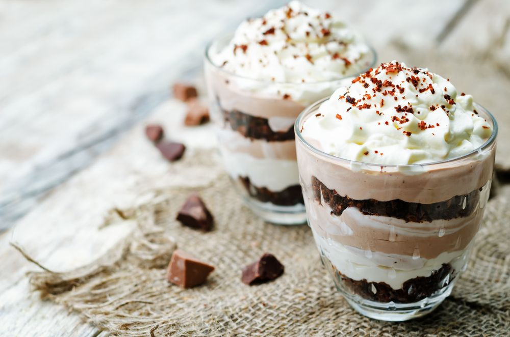

| Home| Quem somos | Contatos | |
|  |
Sobre Receitas de Sobremesas- PAVÊPra voçe que está com muita vontade de fazer uma sobremesa maravilhosa pra voçe e sua familia . confira ja a nossa receita de um pavê delicioso : INGREDIENTE - CREME BRANCO 1 lata de leite condensado 1 lata de leite integral, a medida da lata de leite condensado 1 colher de sobremesa de amido de milho 2 gemas peneiradas INGREDIENTES - CREME DE CHOCOLATE 1 lata de leite condensado 1 lata de leite integral, a mesma medida da lata de leite condensado 1 colher de sobremesa de maisena 2 gemas peneiradas 4 colheres de chocolate em pó Ingredientes - Cobertura 4 claras 4 colheres de açúcar 1 lata de creme de leite sem soroMODO DE PREPARO 1. Molhe os biscoitos maizena no leite com chocolate 2. Prepare cada creme juntando seus ingredientes em uma panela e mexa em fogo brando até engrossar 3. Para a cobertura, bata as claras com o açúcar até obter claras em neve bem consistentes 4. Misture o creme de leite as claras em neve 5. Coloque em um refratário grande na seguinte sequência: creme branco, metade das bolachas, creme de chocolate, restante das bolachas, claras em neve 6. Dica: Decore com chocolate granulado ou raspas de chocolate ao leite ou coco ralado |
todos os direitos reservado |
|